以下是可以在122.0.65.73 23333端口使用的先行卡的列表。下载补丁后即可使用。
使用方法：原版游戏下载补丁后解压至根目录，手机党请自定义数据库（方法自行搜索），暂不支持游侠版游戏。
脚本作者：ygohack137，以及其他公开发布的先行卡脚本的作者。
卡片列表
| 卡图 | 卡名 | 效果 |
|---|---|---|
| 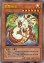 | 歌舞伎龙 | [怪兽|效果] 龙/光 [★★★★★★] 2300/2100 ①：1回合1次，自己怪兽向对方怪兽攻击的伤害计算前才能发动。那只对方怪兽的表示形式变更。 ②：1回合1次，对方怪兽向自己怪兽攻击的伤害计算前才能发动。那只自己怪兽的表示形式变更。 |
| 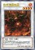 | 古神 克图格亚 | [怪兽|效果|同调] 念动力/炎 [★★★★] 2200/200 调整＋调整以外的怪兽1只以上 ①：这张卡同调召唤成功的场合才能发动。场上的4阶的超量怪兽全部回到持有者的额外卡组。②：这张卡为素材的融合召唤成功的场合发动。自己从卡组抽1张。 ③：场上的这张卡为素材作超量召唤的怪兽得到以下效果。 ●这次超量召唤成功的场合发动。自己从卡组抽1张。 |
| 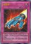 | 火箭手 | [陷阱] 「火箭手」的①②的效果1回合只能有1次使用其中任意1个。 ①：以自己场上1只攻击力800以上的攻击表示怪兽为对象才能把这张卡发动。这张卡当作攻击力上升800的装备卡使用给那只怪兽装备。 ②：把装备的这张卡送去墓地，以场上1张表侧表示的卡为对象才能发动。那张卡破坏。那之后，这张卡装备过的怪兽攻击力变成0，不能把表示形式变更。 |
| 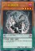 | P·M 捕获者 | [怪兽|效果|灵摆] 不死/暗 [★★★★] 1800/0 5/5 ←5 【灵摆】 5→ ①：自己的不死族怪兽灵摆召唤成功时才能发动。那些怪兽在这个回合不会被战斗·效果破坏。 【怪兽效果】 ①：这张卡战斗破坏怪兽的场合，以自己墓地1只灵摆怪兽为对象才能发动。那只怪兽加入手卡。 |
| 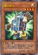 | 立方体人 | [怪兽|效果] 雷/光 [★★★★] 600/1900 ①：1回合1次，自己主要阶段才能发动。掷1次骰子。只要这只怪兽在场上表侧表示存在，双方不能把和出现的数目相同等级的怪兽召唤·特殊召唤。 |
 | 古生物 皮卡虫 | [陷阱] ①：从手卡丢弃1张「古生物」卡。那之后，自己从卡组抽2张。 ②：场上的陷阱卡发动时，连锁那个发动这个效果才能从墓地发动。这张卡变成通常怪兽（水族·水·2星·攻1200/守0）在怪兽区域特殊召唤（不当作陷阱卡使用）。这个效果特殊召唤的这张卡不受怪兽的效果影响，从场上离开的场合除外。 |
| 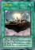 | 幻梦境 | [魔法|场地] 「幻梦境」在1回合只能发动1张。 ①：得到场上的怪兽种类的以下效果。 ●融合：1回合1次，自己的手卡·场上的怪兽被效果送去墓地的场合才能发动。自己从卡组抽1张。 ●同调：怪兽召唤·特殊召唤成功时自己才能把这个效果发动。那只怪兽的等级上升1星。 ●超量：自己结束阶段发动。场上的等级最高的怪兽破坏。 |
 | 缝制恐龙 | [怪兽|效果] 恶魔/地 [★★★★] 0/0 ①：这张卡不会被战斗破坏。 ②：这张卡被选择作为攻击对象的场合发动。这张卡的攻击力·守备力上升1000。 ③：这张卡攻击的伤害计算后发动。这张卡的②的效果上升的数值回到0。 |
| 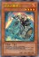 | 业火之重骑士 | [怪兽|效果|二重] 不死/炎 [★★★★] 1800/200 ①：这张卡只要在场上·墓地存在，当作通常怪兽使用。 ②：可以把场上的当作通常怪兽使用的这张卡作为通常召唤作再1次召唤。那个场合这张卡变成当作效果怪兽使用并得到以下效果。 ●这张卡向特殊召唤的怪兽攻击的伤害步骤开始时才能发动。那只怪兽除外。 |
| 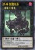 | 外神 阿撒托斯 | [怪兽|效果|超量] 恶魔/暗 [★★★★★] 2400/0 5星怪兽×3 这张卡也能在自己场上的「外神」超量怪兽上面把这张卡重叠来超量召唤。这张卡不能作为超量召唤的素材。 ①：这张卡超量召唤成功的回合，对方不能把怪兽的效果发动。 ②：这张卡有融合·同调·超量怪兽全部在作为超量素材的场合，把这张卡1个超量素材取除才能发动。对方场上的卡全部破坏。 |
 | 古生物 拟油栉虫 | [陷阱] ①：以场上1张魔法·陷阱卡为对象才能发动。那张卡破坏。 ②：场上的陷阱卡发动时，连锁那个发动这个效果才能从墓地发动。这张卡变成通常怪兽（水族·水·2星·攻1200/守0）在怪兽区域特殊召唤（不当作陷阱卡使用）。这个效果特殊召唤的这张卡不受怪兽的效果影响，从场上离开的场合除外。 |
| 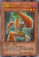 | 胡萝卜人 | [怪兽|效果] 植物/暗 [★★★★] 1900/0 「胡萝卜人」的效果1回合只能使用1次。 ①：这张卡在墓地存在的场合，从手卡以及自己场上的表侧表示怪兽之中把「胡萝卜人」以外的1只植物族怪兽送去墓地才能发动。这张卡从墓地特殊召唤。 |
 | 禁断的偏方三八面体 | [魔法] 「禁断的偏方三八面体」在1回合只能发动1张。自己场上融合·同调·超量怪兽那之中只有2种类的场合，根据那组合的以下效果适用。 ●融合·同调怪兽：从额外卡组把1只「外神」超量怪兽特殊召唤，把这张卡在下面重叠作为超量素材。 ●同调·超量怪兽：从额外卡组把1只「旧神」融合怪兽特殊召唤。 ●超量·融合怪兽：从额外卡组把1只「古神」同调怪兽特殊召唤。 |
| 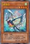 | 灵语鸟 | [怪兽|效果] 鸟兽/风 [★★★★] 200/2000 ①：这张卡1回合只有1次不会被战斗破坏。 ②：这张卡灵摆召唤成功时才能发动。从卡组把1只仪式怪兽或者1张仪式魔法卡加入手卡。 |
| 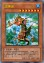 | 龙落亲 | [怪兽|效果|调整] 幻龙/水 [★★★★★★★] 2100/1400 这张卡不用幻龙族怪兽的效果不能特殊召唤。「龙落亲」的效果1回合可以使用最多3次。 ①：自己主要阶段才能发动。这张卡的等级下降1星，在自己场上把1只「龙落衍生物」（幻龙族·水·1星·攻300/守200）特殊召唤。 |
| 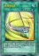 | 灵摆延缓 | [魔法|速攻] ①：这个回合，自己以及对方的灵摆区域的卡不会被对方的效果破坏，以灵摆区域的卡为对象的对方发动的效果无效。 |
| 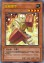 | 纸箱拳手 | [怪兽|效果] 战士/地 [★★★★] 1800/1000 ①：这张卡战斗破坏对方怪兽送去墓地时才能发动。给这张卡放置1个指示物。 ②：把有指示物2个以上放置的这张卡送去墓地才能发动。从卡组把1只地属性怪兽特殊召唤。 ③：这张卡被战斗·效果破坏的场合，可以作为代替把这张卡的1个指示物取除。 |
 | 古生物 奇虾 | [怪兽|效果|超量] 水/水 [★★] 2400/0 2星怪兽×3只以上 ①：这张卡不受其他怪兽的效果影响。 ②：1回合1次，自己的魔法与陷阱区域的陷阱卡被送去墓地的场合才能发动。自己卡组最上面的卡翻开，那是陷阱卡的场合，加入手卡。不是的场合，送去墓地。 ③：这张卡有陷阱卡在作为超量素材的场合，1回合1次，把这张卡1个超量素材取除，以场上1张卡为对象才能发动。那张卡破坏。这个效果在对方回合也能发动。 |
 | 古生物 怪诞虫 | [陷阱] ①：以场上1只表侧表示怪兽为对象才能发动。那只怪兽的攻击力·守备力直到回合结束时变成一半。 ②：场上的陷阱卡发动时，连锁那个发动这个效果才能从墓地发动。这张卡变成通常怪兽（水族·水·2星·攻1200/守0）在怪兽区域特殊召唤（不当作陷阱卡使用）。这个效果特殊召唤的这张卡不受怪兽的效果影响，从场上离开的场合除外。 |
| 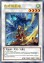 | 古神 哈斯塔 | [怪兽|效果|同调] 爬虫类/风 [★★★★] 2300/1000 调整＋调整以外的怪兽1只以上 ①：这张卡从怪兽区域送去墓地的场合，以对方场上1只表侧表示怪兽为对象才能发动。墓地的这张卡当作装备卡使用给那只怪兽装备。装备怪兽不能攻击，效果无效化。 ②：用这张卡的效果给对方怪兽装备的这张卡从场上离开的场合发动。自己得到这张卡装备过的对方怪兽的控制权。 |
| 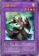 | 旧神 努茨 | [怪兽|效果|融合] 天使/光 [★★★★] 2500/1200 同调怪兽＋超量怪兽 把自己场上的上记卡送去墓地的场合才能特殊召唤（不需要「融合」）。自己对「旧神 努茨」1回合只能有1次特殊召唤。 ①：1回合1次，自己主要阶段才能发动。从手卡把1只4星怪兽特殊召唤。 ②：这张卡被送去墓地的场合，以场上1张卡为对象才能发动。那张卡破坏。 |
| 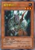 | 魔犀族战士 | [怪兽|效果] 恶魔/地 [★★★] 1400/900 「魔犀族战士」的②的效果1回合只能使用1次。 ①：只要这张卡在怪兽区域存在，「魔犀族战士」以外的自己场上的恶魔族怪兽不会被战斗·效果破坏。 ②：这张卡被送去墓地的场合才能发动。从卡组把「魔犀族战士」以外的1只恶魔族怪兽送去墓地。 |
| 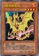 | X射线穿刺龙 | [怪兽|效果] 龙/炎 [★★★★] 1700/200 「X射线穿刺龙」的①②的效果1回合各能使用1次。 ①：自己主要阶段把自己墓地的龙族怪兽和幻龙族怪兽各1只除外才能发动。从手卡·卡组把1只「X射线穿刺龙」特殊召唤。 ②：这张卡从场上送去墓地的场合才能发动。给与对方500伤害。 |
| 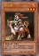 | 半人犬 | [怪兽|效果] 兽战士/炎 [★★★] 1500/200 ①：1回合1次，这张卡和对方怪兽进行战斗的伤害计算时才能发动。从手卡·卡组把1只兽族·兽战士族·鸟兽族怪兽送去墓地，这张卡的攻击力直到战斗阶段结束时上升送去墓地的那只怪兽的等级×100。 |
 | 古生物 加拿大虫 | [陷阱] ①：以对方场上1只表侧表示怪兽为对象才能发动。那只怪兽变成里侧守备表示。 ②：场上的陷阱卡发动时，连锁那个发动这个效果才能从墓地发动。这张卡变成通常怪兽（水族·水·2星·攻1200/守0）在怪兽区域特殊召唤（不当作陷阱卡使用）。这个效果特殊召唤的这张卡不受怪兽的效果影响，从场上离开的场合除外。 |
 | 永远的淑女 贝阿特丽切 | [怪兽|效果|超量] 天使/光 [★★★★★★] 2500/2800 6星怪兽×2 这张卡也能把手卡1只「彼岸」怪兽送去墓地，在自己场上的「但丁」怪兽上面重叠来超量召唤。这个方法特殊召唤的回合，这张卡的①的效果不能发动。 ①：1回合1次，把这张卡1个超量素材取除才能发动。从卡组选1张卡送去墓地。这个效果在对方回合也能发动。 ②：这张卡被对方破坏送去墓地的场合才能发动。从额外卡组把1只「彼岸」怪兽无视召唤条件特殊召唤。 |
 | 永火主教 | [怪兽|效果] 恶魔/暗 [★★★★] 1000/2000 「永火主教」的①的方法的特殊召唤1回合只能有1次。 ①：手卡只有这1张卡的场合，这张卡可以从手卡特殊召唤。 ②：只要自己手卡是0张，自己场上的「永火」怪兽被战斗·效果破坏的场合，可以作为代替把墓地的这张卡除外。 |
 | 隆隆隆左手与右手 | [怪兽|效果] 岩石/地 [★★★★] 0/2200 ①：只要这张卡和这张卡以外的「隆隆隆」怪兽在怪兽区域存在，对方不能选择「隆隆隆」怪兽作为攻击对象，也不能作为效果的对象。 ②：只用包含这张卡的「隆隆隆」怪兽为素材的超量怪兽得到以下效果。 ●这次超量召唤成功时，以对方场上1只表侧攻击表示怪兽为对象才能发动。那只怪兽变成守备表示并把守备力变成0。 |
 | 邪神官 契伦·沙巴 | [怪兽|效果] 爬虫类/暗 [★★★★★★★★] 2500/0 「邪神官 契伦·沙巴」的②的效果1回合只能使用1次。 ①：自己手卡是5张以上的场合，这张卡可以不用解放作召唤。 ②：这张卡被战斗破坏送去墓地时才能发动。这张卡从墓地守备表示特殊召唤。这个效果特殊召唤的这张卡当作调整使用。 |
 | 银河蠕虫 | [怪兽|效果] 昆虫/光 [★★★] 1200/1000 ①：这张卡召唤成功时，自己场上没有这张卡以外的怪兽存在的场合才能发动。从卡组把1只3星以下的「银河」效果怪兽特殊召唤。这个效果特殊召唤的怪兽的效果无效化。 |
| 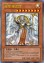 | 天帝 埃忒耳 | [怪兽|效果] 天使/光 [★★★★★★★★] 2800/1000 这张卡可以把1只上级召唤的怪兽解放作上级召唤。 ①：这张卡上级召唤成功的场合才能发动。从手卡·卡组把「帝王」魔法·陷阱卡2种类送去墓地，从卡组把1只攻击力2400以上而守备力1000的怪兽特殊召唤。这个效果特殊召唤的怪兽在结束阶段回到持有者手卡。 ②：这张卡在手卡的场合，对方主要阶段把自己墓地1张「帝王」魔法·陷阱卡除外才能发动。这张卡上级召唤。 |
| 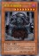 | 冥帝 厄瑞玻斯 | [怪兽|效果] 不死/暗 [★★★★★★★★] 2800/1000 这张卡可以把1只上级召唤的怪兽解放作上级召唤。 ①：这张卡上级召唤成功的场合才能发动。从手卡·卡组把「帝王」魔法·陷阱卡2种类送去墓地，从对方的手卡·场上·墓地之中选1张卡回到卡组。 ②：这张卡在墓地的场合，1回合1次，自己·对方的主要阶段从手卡丢弃1张「帝王」魔法·陷阱卡，以自己墓地1只攻击力2400以上而守备力1000的怪兽为对象才能发动。那只怪兽加入手卡。 |
 | 冥帝从骑 哀多斯 | [怪兽|效果] 魔法师/暗 [★★] 800/1000 「冥帝从骑 哀多斯」的②的效果1回合只能使用1次。 ①：这张卡召唤·特殊召唤成功的场合发动。这个回合，自己在通常召唤外加上只有1次，自己主要阶段可以上级召唤。 ②：把墓地的这张卡除外，以「冥帝从骑 哀多斯」以外的自己墓地1只攻击力800/守备力1000的怪兽为对象才能发动。那只怪兽守备表示特殊召唤。这个回合，自己不能从额外卡组把怪兽特殊召唤。 |
 | 天帝从骑 爱迪娅 | [怪兽|效果] 战士/光 [★] 800/1000 「天帝从骑 爱迪娅」的①②的效果1回合各能使用1次。 ①：这张卡召唤·特殊召唤成功的场合才能发动。从卡组把「天帝从骑 爱迪娅」以外的1只攻击力800/守备力1000的怪兽守备表示特殊召唤。这个回合，自己不能从额外卡组把怪兽特殊召唤。 ②：这张卡被送去墓地的场合，以除外的1张自己的「帝王」魔法·陷阱卡为对象才能发动。那张卡加入手卡。 |
| 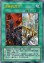 | 泛神的帝王 | [魔法] 「泛神的帝王」的②的效果1回合只能使用1次。 ①：把手卡1张「帝王」魔法·陷阱卡送去墓地才能发动。自己从卡组抽2张。 ②：把墓地的这张卡除外才能发动。从卡组把3张「帝王」魔法·陷阱卡给对方观看，对方从那之中选1张。那1张卡加入自己手卡，剩余回到卡组。 |
| 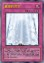 | 真源的帝王 | [陷阱|永续] 「真源的帝王」的②的效果1回合只能使用1次。 ①：1回合1次，以自己墓地2张「帝王」魔法·陷阱卡为对象才能发动。那些卡加入卡组洗切。那之后，自己从卡组抽1张。 ②：这张卡在墓地存在的场合，把这张卡以外的自己墓地1张「帝王」魔法·陷阱卡除外才能发动。这张卡变成通常怪兽（天使族·光·5星·攻1000/守2400）在怪兽区域守备表示特殊召唤（不当作陷阱卡使用）。 |